2D Syntethic Deformations
R markdown html
 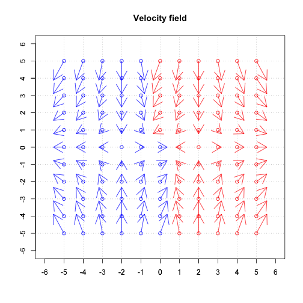
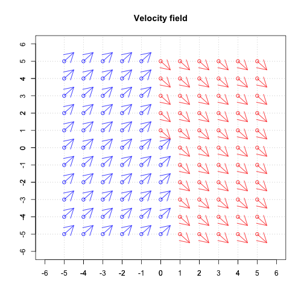
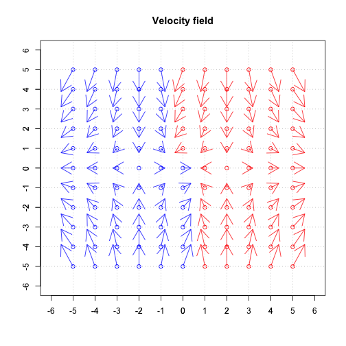
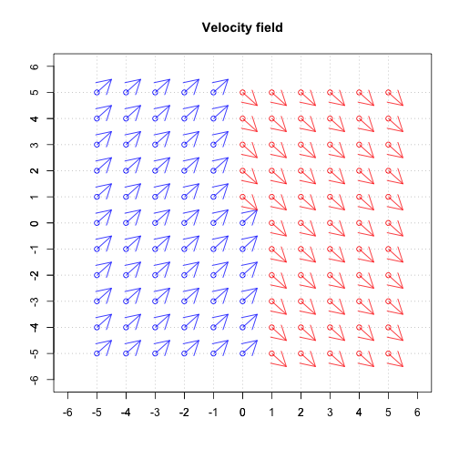Partitioning with the Gibbs Sampler
 R markdown html
R markdown html
Partitions Sampled from Patient Images with Back Pain
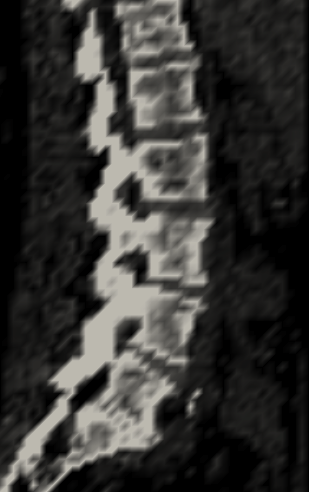
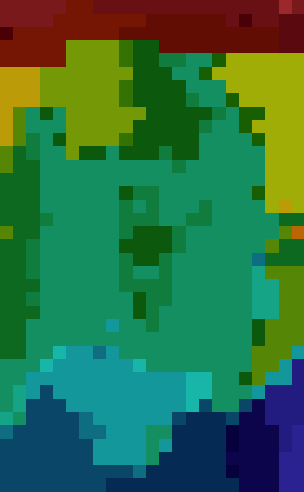
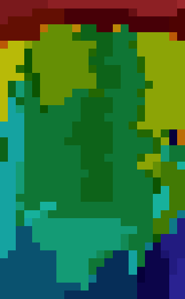
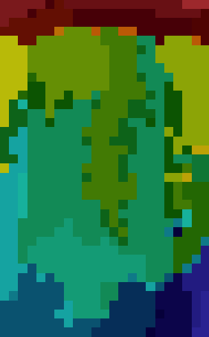
Template image (lateral view), partitions at Gibbs sampling step 10, 20 and 30.
Partitions Sampled from Patient Images with Abdominal Pain
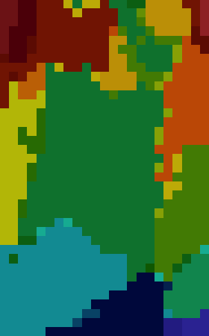
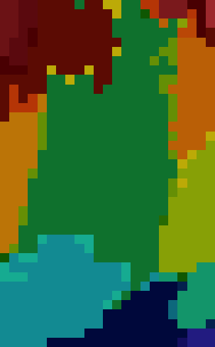
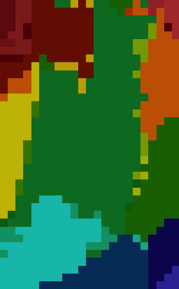
Template image (lateral view), partitions at Gibbs sampling step 10, 20 and 30.